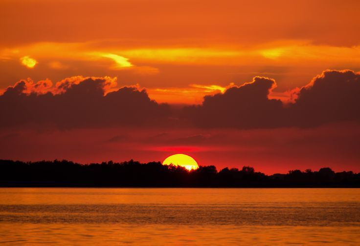
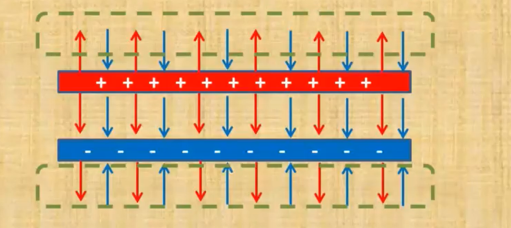

Четыре разных формата — четыре разных задачи. Посмотрите, как каждый из них подходит для своего типа контента.

Формат: JPG (JPEG) — идеален для фотографий и сложных изображений с градиентами. Почему? JPG «сжимает» файл с потерей качества, но человеческий глаз почти не замечает разницы. Фотография заката имеет миллионы оттенков и плавные переходы цветов — JPG справляется с этим лучше всего при маленьком размере файла (обычно 100-300 КБ).

Формат: PNG — лучший выбор для скриншотов, интерфейсов и изображений с текстом. Почему? PNG использует сжатие без потерь — текст, границы окон и пиксельная графика остаются чёткими, без размытия. Кроме того, PNG поддерживает прозрачность, что важно для иконок и логотипов на сложном фоне. Минус: файл весит больше JPG, но для скриншотов это оправдано.
Формат: SVG (Scalable Vector Graphics) — векторный формат для логотипов, иконок и схем. Почему? SVG — это не «картинка из пикселей», а набор математических формул (линии, кривые, цвета). Поэтому SVG не теряет качество при любом масштабировании — хоть 16×16 пикселей, хоть на огромном экране. Логотип весит буквально 1-5 КБ, даже если он сложный. И содержимое SVG можно стилизовать через CSS!
Формат: GIF — для коротких анимаций без звука. Почему? GIF поддерживает покадровую анимацию и зацикливание. Минусы: всего 256 цветов на всю картинку (поэтому фото в GIF будут выглядеть ужасно), нет прозрачности с плавными градиентами (только «или прозрачно/или нет»). Современная замена — WebP и APNG (лучше качество и меньше вес), но формат GIF всё ещё жив из-за совместимости со всеми браузерами.